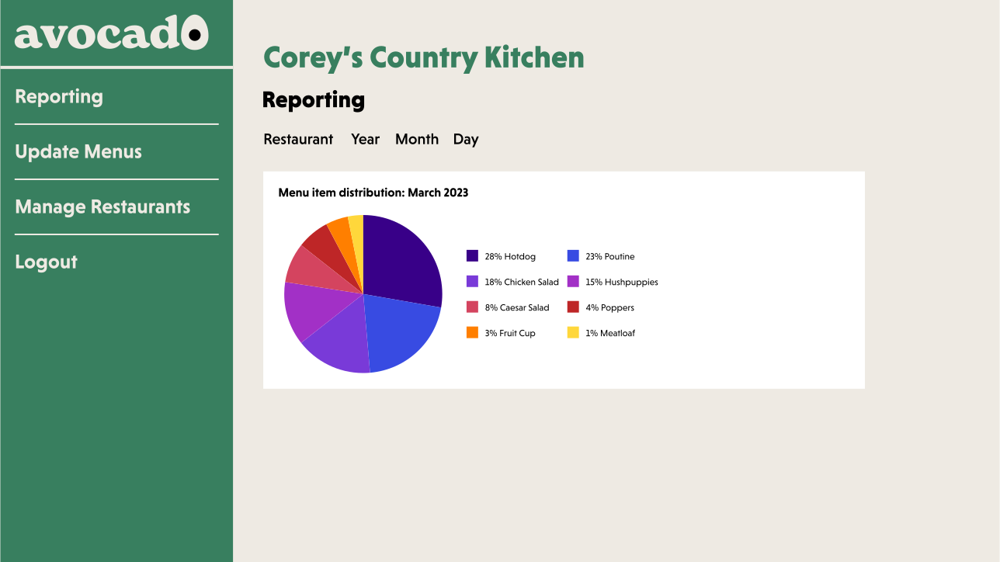
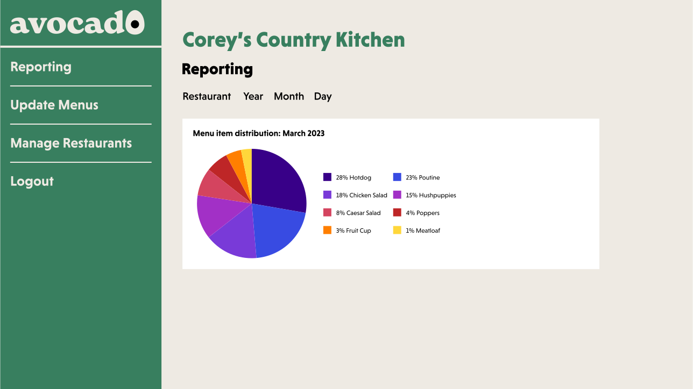

This was the final project for Digital Crafts. Avocado is a group project where myself and 3 other students collaborated. The guidelines were to create an app using front and backend technologies we had learned. Avocado is a service like Toast or UnTappd where restaurants can upload menu items and track orders. Customers can login or continue as a guest and order items from a restaurant. Owners can manage restaurant information, update menus and account information, and view order reports using Plotly. Owners also have access to a back of house screen populated with orders placed at a restaurant they own.
I assisted the group by creating the brand guide as well as the intial page layouts for the project using Adobe Illustrator. Pages were made using React.jsx files and components and routed with Browser Router. Variables like shopping cart, customer & restaurant information were stored in the Redux store along with a handful of functions used across the site. Supabase was used to create databases for customers, owners, restaurants, menu items, orders, and order items. Each of these tables have routes to create, read, update, and delete rows within the database. Functions to do CRUD from the database were called on the frontend for their relevant pages. My role with these routes was primarily focused on restaurant management and customer orders.
Restaurant management desktop mockups
 

Order confirmed illustration and user account mobile page mockup
Logos made in Adobe Illustrator based on teachers at DC
Admin dashboard landing image also made in Illustrator